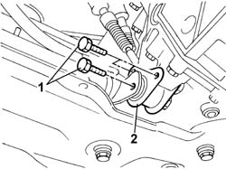

1008C34 BRACKET ON GEARBOX FOR LOWER REACTION LINK R R
- Path
- Procedures > 10 ENGINE UNIT > 1008 POWER UNIT SUPPORTS > 1008C POWER UNIT REACTION ELEMENTS > 1008C34 BRACKET ON GEARBOX FOR LOWER REACTION LINK R R
- Kind
- repair procedure (removal / refitting; the operation number is the code)
- Applies to
- engines: 2.0 16V, 2.0 JTD 8V, 2.3 JTD 16V; all production periods
- Interactive page
- https://sloeber94.github.io/elrnDB-fDct/en/#/244000636
Applies to: engines: 2.0 JTD 8V; all production periods
 Removing
Removing
 Refitting
RefittingOp. 7055B54 UNDER-ENGINE GUARD - R R
1. Undo the fixing bolts.
2. Remove the reaction link bracket, gearbox side.

Applies to: engines: 2.0 JTD 8V; all production periods
Refitting
Removing- Fit the reaction link bracket, gearbox side.
- Tighten the bolts securing the bracket to the gearbox to torque.
Applies to: engines: 2.0 16V; all production periods
Removing
RefittingOp. 7055B54 UNDER-ENGINE GUARD - R R
1. Undo the fixing bolts.
2. Remove the reaction link bracket, gearbox side.
Applies to: engines: 2.0 16V; all production periods
Refitting
Removing- Fit the reaction link bracket, gearbox side.
- Tighten the bolts securing the bracket to the gearbox to torque.
Applies to: engines: 2.3 JTD 16V; all production periods
Removing
RefittingOp. 7055B54 UNDER-ENGINE GUARD - R R
1. Undo the retaining bolts.
2. Remove the reaction link bracket, gearbox side.
Applies to: engines: 2.3 JTD 16V; all production periods
Refitting
Removing- Fit the reaction link bracket, gearbox side.
- Tighten the bolts securing the bracket to the gearbox to torque.
 | Value - daNm | Fastening | Component | Ø |
|---|---|---|---|---|
. | - | - | BRACKET ON GEARBOX FOR LOWER LINK | - |